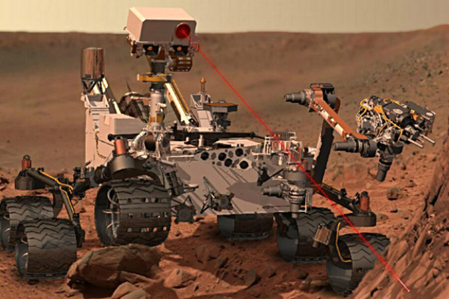
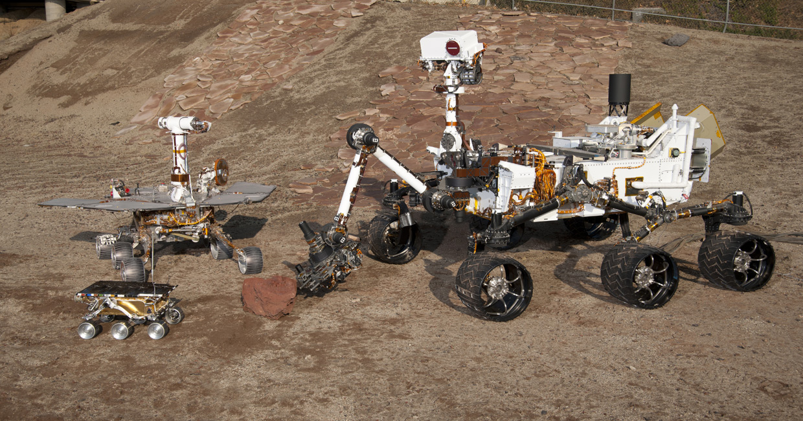

Curosity
Curiosity landed on Mars on August 5th, 2012. I Tweighted 1,982 lbs with a top speed of 0.9mph. It specialty was to find out if Mars once had what all life needs: lasting water and the right chemical Ingredienents
details

Opportunity
Opportunity landed on mars with spirit on Jaunary 3 2004. He weight's 374 pounnd with a top speed of 0.1 miles per hour. Hes specialty is finding evidence of water on Mars.
details
Spirit
Spirit had the same detail and speciatlys on mars but one thing not mentioned in opportunitys description is that they had a expecited time for 90 days and welll exceeded that.
details
Sojourner
Sojourner was the first rover ever sent to mars. Sojourner was sent to mars on July 1997 weighing 23 punds and with a top speed of 0.02. Its specialty was being the frist wheeled robot to rove the Red planet(Mars).
details
Perseverance
Perseverance is a rover that landed on Mars on February 18, 2021. It is studying a region of Mars called Jezero Crater. It weighted 2,260 pounds and had a top speed of 0.9 mph. THis was the most recent rover sent to mars.
details